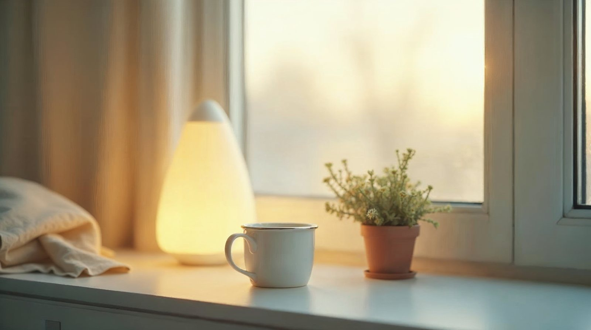
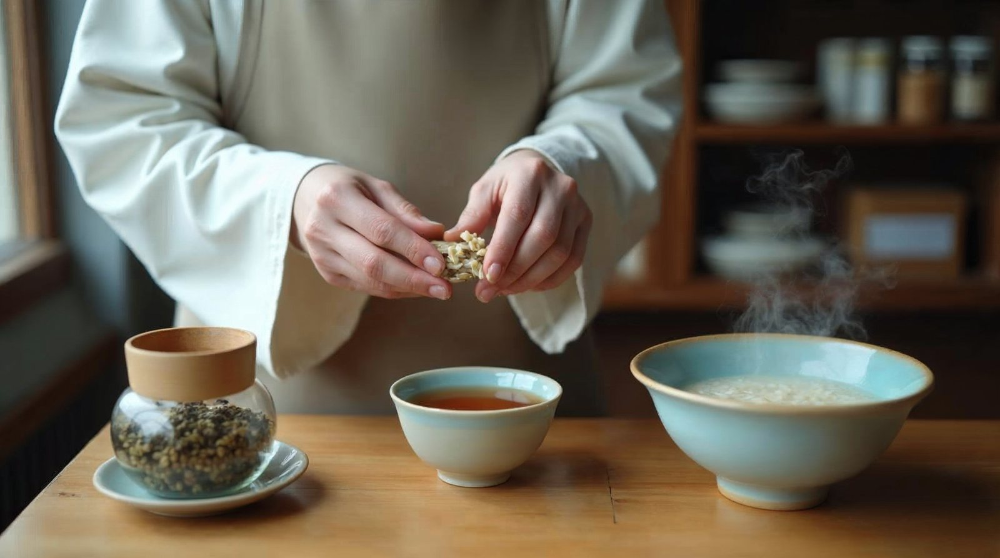
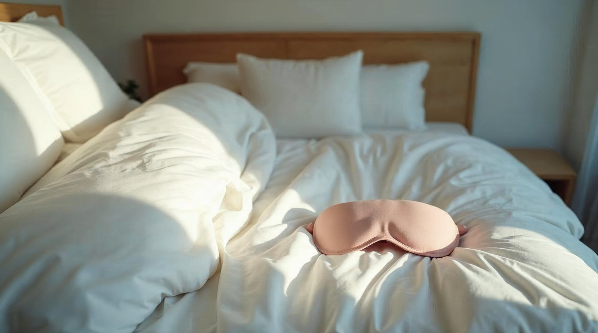

이종호 한의사 감수좋은꿈참사랑한의원 대표원장 (한의사 면허번호 19769)발행 2026-11-24 · 수정 2026-11-26
이 글의 차례
- 왜 이런 불편이 생길 수 있나요
- 왜 밤샘 한 번이 며칠씩 이어질까요
- 먼저 이렇게 여쭙니다
- 일상에서 먼저 해 볼 수 있는 것
- 상황별 예시
- 스스로 점검해 보세요
- 비슷한 불편과 어떻게 구분하나요?
- 리듬을 되돌리는 2주, 이렇게 나눠 보세요
- 한의원에서 함께 살필 수 있는 경우
- 잠들기 전 1시간은 어떻게 보내면 좋을까요?
- 자취방과 기숙사에서 잠자리 챙기기
- 진료를 받는 동안에는 어떻게 지내면 좋을까요?
- 커피와 에너지 음료는 어떻게 줄이나요?
- 첫 진료 전에 무엇을 준비하면 좋을까요?
- 얼마나 지켜보고 언제 상담할까요
- 이렇게 기록해 오시면 상담이 쉬워집니다
- 다음 시험기간에 다시 무너지지 않으려면?
- 이런 증상은 먼저 확인이 필요합니다
- 관련 글
밤샘이 잦아 무너진 잠 리듬은 잠드는 시간보다 일어나는 시간을 먼저 고정하고, 일어나자마자 햇빛을 보는 것부터 되돌리기 시작하는 것이 좋습니다. 과제 마감과 시험이 겹쳐 새벽 4~5시에 잠들고 오후에 일어나는 생활이 이어지면, 시험이 끝나도 밤에 잠이 오지 않는 일이 흔하기 때문입니다.
밀린 리듬을 되돌리는 데는 한두 주가 걸리는 경우가 많아, 시험이 끝나고 며칠 만에 돌아오지 않는다고 조급해하실 필요는 없습니다.
왜 이런 불편이 생길 수 있나요
- 늦게 자고 늦게 일어나는 날이 이어지면 몸의 시계가 뒤로 밀립니다.
- 밤늦게까지 보는 화면 빛과 늦은 카페인은 잠드는 것을 더 늦춥니다.
- 오후 늦게 일어나 낮잠까지 자면 밤에 졸음이 오지 않습니다.
- 마감 압박과 불안이 누워서도 머리를 깨어 있게 만들기도 합니다.
- 밤샘 다음 날 커피로 버티면 그날 밤 다시 잠들기 어려워, 밤샘이 다음 밤샘으로 이어지기 쉽습니다.
- 끼니를 거르다 밤늦게 몰아 먹으면 소화가 덜 된 채 누워 잠이 얕아질 수 있습니다.
왜 밤샘 한 번이 며칠씩 이어질까요
몸의 시계는 아침 햇빛을 보면 다시 맞춰지는데, 밤을 새우고 오후에 일어나면 그 신호를 놓치게 됩니다. 그러면 다음 날 밤에도 졸음이 늦게 찾아와 잠드는 시각이 계속 뒤로 밀립니다.
깨어 있는 시간이 길수록 잠을 원하는 힘이 쌓이는데, 오후 늦게 낮잠을 자면 그 힘이 미리 풀려 버립니다. 밤샘 뒤 긴 낮잠이 다음 밤잠을 방해하는 까닭입니다.
카페인은 몸에서 빠져나가는 데 몇 시간이 걸립니다. 저녁에 마신 커피 한 잔이 자정 넘어서까지 머리를 깨어 있게 할 수 있어, 마지막으로 마시는 시각을 정해 두는 것이 중요합니다.
먼저 이렇게 여쭙니다
- 최근 2주 동안 잠든 시간과 일어난 시간이 어떻게 되나요?
- 커피나 에너지 음료를 하루 몇 잔, 몇 시까지 드시나요?
- 잠들기 전 휴대폰이나 노트북을 얼마나 보나요?
- 낮에 졸려서 수업이나 아르바이트에 지장이 있나요?
- 누워도 머리가 깨어 있는 느낌이 드나요?
- 끼니는 하루 몇 번 드시고, 마지막 식사는 몇 시쯤인가요?
- 다시 오신 분께는 지난번 이후 기상 시각을 며칠이나 지켰는지부터 이어서 여쭙니다.

일상에서 먼저 해 볼 수 있는 것
- 잠드는 시간보다 일어나는 시간을 먼저 정해 매일 지키기
- 일어나면 바로 커튼을 열거나 밖에 나가 햇빛 보기
- 카페인은 오후 2시 이후로 줄이기
- 밤샘을 했다면 다음 날 낮잠을 길게 자지 말고 일찍 잠자리에 들기
- 침대에서는 과제나 휴대폰을 하지 않고 잠만 자기
- 기상 시각을 한 번에 크게 당기기보다 사나흘마다 30분씩 앞당기기
- 과제는 책상이나 도서관에서 하고, 잠들기 1시간 전에는 마무리하기
상황별 예시
- 예를 들어 기말 과제 마감이 몰려 사흘 연속 새벽 5시에 잠든 학생의 경우, 시험이 끝나고 나서도 새벽 2~3시까지 눈이 말똥말똥할 수 있습니다. 첫 주에는 오전 10시 기상을 지키고 다음 주에 9시로 당기는 식으로, 일어나는 시각부터 단계를 나눠 되돌려 볼 수 있습니다.
- 예를 들어 밤에 아르바이트를 마치고 들어와 새벽까지 과제를 하는 학생의 경우, 늦은 야식과 에너지 음료가 겹쳐 잠이 더 늦어지기도 합니다. 아르바이트가 있는 날과 없는 날의 기상 시각 차이를 줄이고, 카페인을 마시는 마지막 시각을 정해 두는 것부터 함께 정리해 봅니다.
- 예를 들어 오전 수업이 없는 학기라 오후에 일어나는 날이 많아진 학생의 경우, 리듬이 조금씩 뒤로 밀리다 아침 시험 날 일어나기 힘들어질 수 있습니다. 시험 2~3주 전부터 시험 시각에 맞춰 일어나는 연습을 해 두면 부담을 덜 수 있습니다.
스스로 점검해 보세요
- 일어나는 시각이 날마다 2시간 넘게 들쭉날쭉하다
- 커피나 에너지 음료를 오후 늦게까지 마신다
- 잠들기 직전까지 침대에서 휴대폰이나 노트북을 본다
- 밤샘 다음 날 오후에 2~3시간씩 낮잠을 잔다
- 끼니를 거르고 밤늦게 몰아 먹는 날이 많다
- 시험이 끝났는데도 새벽 3시 전에는 잠이 오지 않는다
- 누우면 걱정이 꼬리를 물어 30분 넘게 잠들지 못한다
앞의 다섯 가지는 생활 순서부터 바꿔 볼 신호이고, 뒤의 두 가지 가운데 하나라도 2주 넘게 이어진다면 상담을 받아 보세요.
비슷한 불편과 어떻게 구분하나요?
잠이 무너졌다는 같은 말 안에도 여러 흐름이 있어, 함께 오는 모습을 보고 살피는 방향을 정합니다.
- 늦게 자고 늦게 일어나면 잘 자는데 아침에 일어나기만 힘들다면, 잠의 시간대가 뒤로 밀린 흐름이라 기상 시각부터 당겨 봅니다.
- 일찍 누워도 걱정이 꼬리를 물어 잠들지 못하고 낮에도 불안하다면, 마음의 긴장을 함께 살핍니다.
- 충분히 자는데도 낮에 견디기 힘들 만큼 졸리다면, 잠의 질이나 다른 원인이 있는지 확인합니다.
- 잠과 함께 식욕, 흥미, 기분이 몇 주째 떨어져 있다면 기분의 변화도 함께 이야기해 주세요.
스스로 나누기 어렵더라도 2주 정도의 잠 기록이 있으면 어느 쪽에 가까운지 함께 보기 쉽습니다.
리듬을 되돌리는 2주, 이렇게 나눠 보세요
한꺼번에 바꾸려 하면 지치기 쉬워, 단계를 나눠 하나씩 붙여 가는 편이 오래갑니다.
- 1. 첫 사흘은 목표 기상 시각을 정하고, 늦게 잠들어도 그 시각에 일어나 햇빛을 봅니다.
- 2. 4~7일째에는 낮잠을 이른 오후 20~30분 안쪽으로 줄이고, 카페인은 오후 2시 전까지만 마십니다.
- 3. 둘째 주에는 기상 시각을 사나흘마다 30분씩 당기고, 잠들기 1시간 전에는 화면을 끄는 시간을 정합니다.
- 4. 주말에도 평일 기상 시각과 1시간 넘게 차이 나지 않게 일어납니다.
- 5. 매일 밤 다음 날 할 일을 종이에 적어 두고 눕습니다. 머릿속 할 일을 밖으로 꺼내 두면 누워서 덜 맴돌 수 있습니다.

한의원에서 함께 살필 수 있는 경우
- 시험이 끝난 뒤에도 잠 리듬이 돌아오지 않는 경우 잠의 흐름과 생활 습관을 함께 살핍니다.
- 불안이나 긴장 때문에 누워도 머리가 깨어 있는 경우 마음의 긴장도 함께 살핍니다.
- 소화가 불편하거나 입맛이 들쭉날쭉한 경우 식사 리듬도 이어서 여쭙니다.
좋은꿈참사랑한의원에서는 첫 방문 때 모든 분께 맥부터 짚으면서 최근 2주의 잠 기록과 공부·아르바이트 일정, 카페인과 식사 시간을 여쭙고, 혀와 배를 살펴 몸의 긴장과 소화 상태를 봅니다. 두통이나 목·어깨 결림이 함께 있다면 움직임도 확인합니다.
그 뒤 필요하다고 판단될 때 침이나 한약 상담 등을 정하고, 일어나는 시간부터 되돌리는 순서를 시험과 과제 일정에 맞춰 계획합니다. 다음에 오시면 지난번 정한 기상 시각과 잠 기록을 이어서 보며 계획을 다시 맞춥니다.
잠들기 전 1시간은 어떻게 보내면 좋을까요?
잠들기 1시간 전에는 과제를 마무리하고, 방 불을 조금 어둡게 해 주세요. 밝은 화면과 불빛은 잠드는 시각을 늦출 수 있습니다.
따뜻한 물로 씻고, 다음 날 입을 옷과 가방을 챙기는 것처럼 매일 같은 순서를 반복하면 몸이 잠잘 때가 되었다는 신호로 받아들이기 쉽습니다.
누워서 20~30분이 지나도 잠이 오지 않으면 일어나 어두운 불빛 아래 책을 잠깐 읽다가 졸릴 때 다시 누워 보세요. 침대에서 휴대폰을 보며 기다리는 것보다 부담이 적습니다.
자취방과 기숙사에서 잠자리 챙기기
자취방은 책상과 침대가 가까워 침대에서 과제를 하게 되기 쉽습니다. 침대에서는 잠만 자기로 정하고, 과제는 책상이나 도서관으로 옮겨 보세요.
기숙사처럼 룸메이트와 생활 시간이 다르다면 안대와 귀마개가 도움이 될 수 있습니다. 아침에는 커튼을 조금 열어 두어 햇빛이 들게 하면 기상 시각을 지키기 쉬워집니다.
야식과 에너지 음료를 방에 쌓아 두면 밤늦게 손이 가기 쉽습니다. 방에 두는 간식의 양을 줄이는 것도 작은 방법입니다.
진료를 받는 동안에는 어떻게 지내면 좋을까요?
기상 시각과 잠 기록을 이어서 적어 오시면 다음 단계를 함께 정하기 쉽습니다. 시험이나 과제 일정이 바뀌면 그때그때 알려 주세요. 일정에 맞춰 계획을 다시 맞춥니다.
커피와 에너지 음료는 어떻게 줄이나요?
하루아침에 끊기보다 마시는 시각부터 앞당기는 편이 수월합니다. 오후 2시를 마지막 시각으로 정하고, 그 뒤에는 물이나 카페인이 없는 차로 바꿔 보세요.
에너지 음료는 제품에 따라 카페인과 당이 많아 밤잠에 오래 영향을 줄 수 있습니다. 하루 잔 수를 정해 두고, 한 번에 여러 캔을 마시지 않도록 주의해 주세요.
갑자기 줄이면 며칠은 머리가 무겁거나 졸릴 수 있습니다. 그럴 때는 잔 수를 하나씩 천천히 줄이고, 낮에 햇빛을 보며 짧게 걷는 것으로 졸음을 달래 보세요.
첫 진료 전에 무엇을 준비하면 좋을까요?
최근 2주의 잠 기록이 있다면 가져와 주세요. 휴대폰 수면 기록 앱이나 메모를 그대로 보여 주셔도 됩니다.
커피와 에너지 음료를 하루 몇 잔, 몇 시에 마시는지 적어 오시면 어디서부터 바꿀지 정하기 쉽습니다.
시험과 과제 마감 일정, 아르바이트 시간표를 알려 주시면 그 사이에 지킬 수 있는 계획을 함께 세웁니다.
드시는 약이나 영양제, 수면 보조제가 있다면 이름을 적어 오세요. 오전 수업이 없는 날 오전으로 진료를 잡으면 기상 시각을 지키는 계기로 삼을 수도 있습니다.
잠이 무너진 시기에 입맛이나 대변이 함께 달라졌다면 그것도 적어 오세요. 잠과 소화를 함께 보면 어디부터 바꿀지 정하기 쉽습니다.
얼마나 지켜보고 언제 상담할까요
- 일어나는 시각을 고정한 뒤 1~2주는 잠 기록을 적으며 잠드는 시간이 따라오는지 지켜보세요.
- 2주가 넘도록 같은 시각에 일어나려 애써도 새벽 3시 이후에야 잠드는 날이 이어지면 상담을 권합니다.
- 시험이 끝나고 한 달 가까이 리듬이 돌아오지 않거나 학기마다 같은 일이 되풀이된다면, 다음 시험 전에 미리 살펴보세요.

이렇게 기록해 오시면 상담이 쉬워집니다
- 2주 동안 잠든 시각, 일어난 시각, 낮잠
- 카페인 종류와 잔 수, 마지막으로 마신 시각
- 잠들기 전 화면을 보는 시간
- 시험과 과제 일정
- 아르바이트 시간과 끼니 시각
기록은 한 줄이면 충분합니다. 예를 들어 '월요일, 새벽 3시 잠듦, 10시 기상, 낮잠 없음, 커피 2잔(마지막 오후 4시)'처럼 적으면 됩니다. 휴대폰 메모나 달력 앱을 써도 좋습니다.
다음 시험기간에 다시 무너지지 않으려면?
시험 일정이 나오면 마감이 몰리는 주를 미리 표시하고, 그 전 주에 과제를 조금씩 앞당겨 두세요. 밤샘을 하루 줄이는 것만으로도 리듬을 되돌리는 기간이 짧아질 수 있습니다.
밤샘이 불가피한 날을 정해 두었다면, 그다음 날은 일찍 잠자리에 드는 날로 미리 비워 두는 방법도 있습니다.
끼니를 거르지 않는 것도 잠을 돕습니다. 아침을 가볍게라도 먹으면 몸이 아침이라는 신호를 하나 더 받게 됩니다.
이런 증상은 먼저 확인이 필요합니다
- 며칠씩 거의 자지 않아도 피곤하지 않고 기분이 지나치게 들뜬 경우
- 기분이 깊게 가라앉아 일상이 어렵거나, 스스로를 해치고 싶은 생각이 드는 경우(☎ 109로 바로 연락)
이런 신호가 있으면 한의원보다 가까운 병원이나 응급실을 먼저 찾으세요.
관련 글
- 대학교 기말고사가 끝난 뒤 밤낮이 바뀐 생활은 어떻게 되돌리나요?
- 커피와 에너지 음료로 버티다 밤에 잠이 안 올 때는 어떻게 하나요?
- 시험 4주 전에는 잠과 식사 리듬을 어떻게 점검하면 되나요?

여쭙는 것
- 최근 2주 동안 잠든 시간과 일어난 시간이 어떻게 되나요?
- 커피나 에너지 음료를 하루 몇 잔, 몇 시까지 드시나요?
- 잠들기 전 휴대폰이나 노트북을 얼마나 보나요?
생활에서 해 볼 것
- 잠드는 시간보다 일어나는 시간을 먼저 정해 매일 지키기
- 일어나면 바로 커튼을 열거나 밖에 나가 햇빛 보기
- 카페인은 오후 2시 이후로 줄이기
한의원에서 함께 살필 것
- 시험이 끝난 뒤에도 잠 리듬이 돌아오지 않는 경우 잠의 흐름과 생활 습관을 함께 살…
- 불안이나 긴장 때문에 누워도 머리가 깨어 있는 경우 마음의 긴장도 함께 살핍니다.
- 소화가 불편하거나 입맛이 들쭉날쭉한 경우 식사 리듬도 이어서 여쭙니다.
먼저 확인이 필요한 신호
- 며칠씩 거의 자지 않아도 피곤하지 않고 기분이 지나치게 들뜬 경우
- 기분이 깊게 가라앉아 일상이 어렵거나, 스스로를 해치고 싶은 생각이 드는 경우(10…
한눈에 보는 표
| 구분 | 핵심 |
|---|---|
| 여쭙는 것 | 최근 2주 동안 잠든 시간과 일어난 시간이 어떻게 되나요? 커피나 에너지 음료를 하루 몇 잔, 몇 시까지 드시나요? |
| 생활에서 해 볼 것 | 잠드는 시간보다 일어나는 시간을 먼저 정해 매일 지키기 일어나면 바로 커튼을 열거나 밖에 나가 햇빛 보기 |
| 한의원에서 함께 살필 것 | 시험이 끝난 뒤에도 잠 리듬이 돌아오지 않는 경우 잠의 흐름과 생활 습관을 함께 살핍니다. 불안이나 긴장 때문에 누워도 머리가 깨어 있는 경우 마음의 긴장도 함께 살핍니다. |
| 먼저 확인이 필요한 신호 | 며칠씩 거의 자지 않아도 피곤하지 않고 기분이 지나치게 들뜬 경우 기분이 깊게 가라앉아 일상이 어렵거나, 스스로를 해치고 싶은 생각이 드는 경우(109로 바로 연락) |
자주 묻는 질문
주말에 몰아서 자면 괜찮지 않나요?
주말에 늦게 일어나면 월요일 밤에 다시 잠들기 어려워질 수 있어, 평일과 일어나는 시간 차이를 1시간 안쪽으로 두는 편을 권합니다.
잠이 안 올 때 술을 조금 마시면 도움이 되나요?
술은 잠드는 데 잠깐 도움을 주는 것 같아도 새벽에 자주 깨게 만들 수 있어 권하지 않습니다.
수면 보조제를 먹어 봐도 되나요?
드시려는 제품이나 약이 있다면 진료 때 알려 주세요. 처방받은 수면제는 처방한 의사와 상의 없이 줄이거나 끊지 않습니다.
시험기간에 밤샘을 피할 수 없다면 어떻게 하나요?
밤샘 다음 날에도 일어나는 시간은 크게 미루지 마세요. 너무 졸리다면 이른 오후에 20~30분 안쪽으로 짧게 주무시고, 모자란 잠은 그날 밤 조금 일찍 잠자리에 들어 채우는 편을 권합니다.
밤샘이 잦은데 한약 상담을 받아도 되나요?
잠과 함께 소화, 긴장, 피로를 살펴 필요하다고 판단될 때 상담합니다. 드시는 약이나 영양제가 있다면 먼저 알려 주세요.
좋은꿈참사랑한의원은 재진 때 지난번 이야기부터 이어서 여쭙니다. 진료시간과 예약은 오시는 길에서 확인하세요.
어디서 상담받을 수 있나요?
좋은꿈참사랑한의원은 서울 동작구 만양로2길 2 신성빌딩 3층·5층(서울 동작구 상도동, 7호선 상도역 3번 출구 근처)에 있습니다. 한의사 3명(이종호 대표원장, 조영기 수석진료원장, 정원영 진료원장)이 진료합니다. 진료시간은 평일 09:30~20:00(점심 13:00~14:00), 토·일·공휴일 09:30~15:00이며, 방문 전 전화로 확인을 권합니다. 예약은 네이버 예약, 카카오톡 상담, 전화 02-815-7510로 받습니다.
이 글은 일반적인 건강 정보이며 개인의 진단이나 치료를 대신하지 않습니다. 증상이 있거나 복용 중인 약이 있다면 진료를 통해 확인하세요. 치료 효과는 개인마다 다를 수 있습니다.
작성 기준: 일반적으로 알려져 있는 건강 정보를 참고해 정리했습니다(대표원장 감수). 증상 기록은 1~2주 동안 하루 1회, 비슷한 시간에 적어 오시면 지난 상태와 비교하기 쉽습니다.